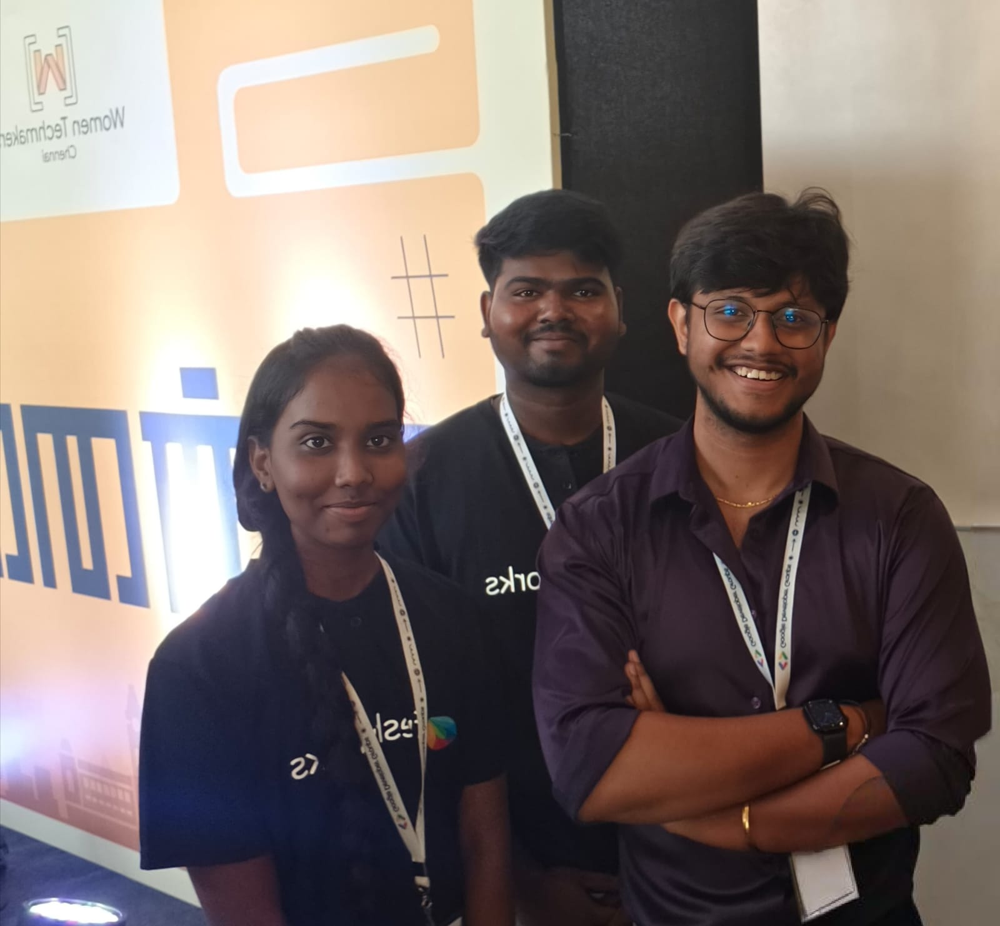
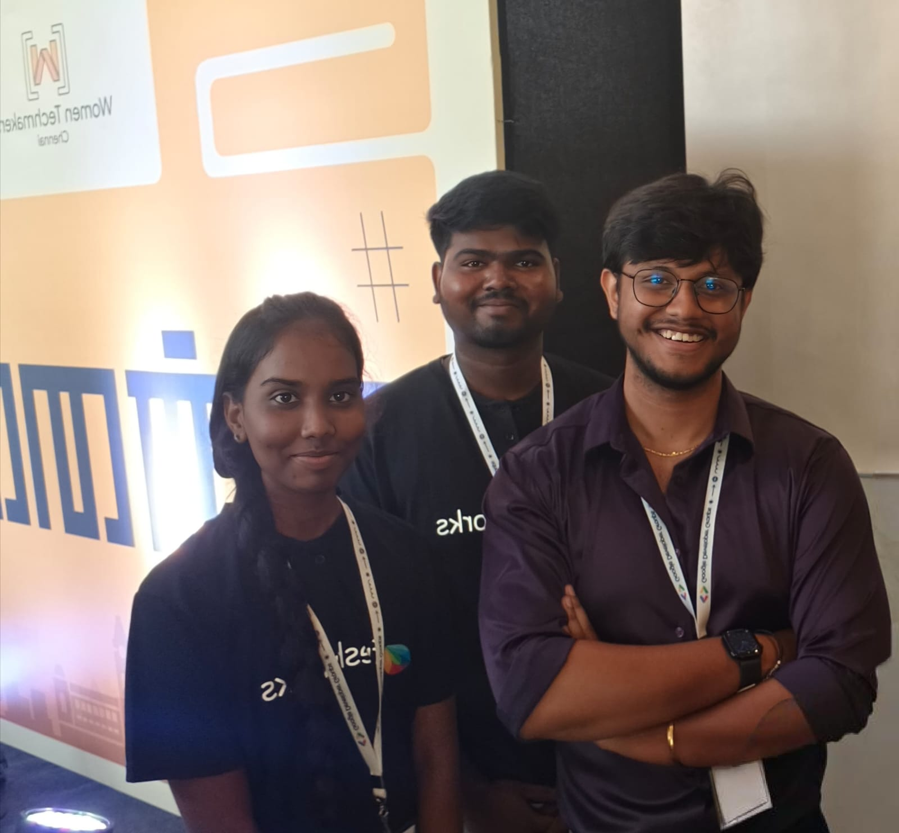

HELLO I'M
RAMYAI am interested in
HELLO I'M
RAMYAI am interested in
Hi, I am Ramya from Chennai. After completing my 12th standard, I joined Freshworks STS Software Academy to begin my journey in the IT field. I am currently learning Full Stack Development including HTML, CSS, JavaScript, Python, SQL, and the MERN stack. I enjoy building websites, working on backend logic, databases, and APIs. I have completed full-stack projects that helped me understand real-world application development, and I regularly practice coding to improve my problem-solving skills. My goal is to secure an internship as a Full Stack Developer and grow into a skilled software engineer.


Best Student

Poetry Winner

HackerRank Problem Solving ★★★

HackerRank Python ★★
 

This code uses CSS Grid to arrange the boxes. The class .hcf is the main grid container. It has 9 columns and 6 rows. The gap gives space between the boxes. Each box uses grid-column and grid-row to choose its place in the grid. For example, grid-column 1/3 means the box starts at column 1 and ends at column 3. This makes the box bigger. By changing the column and row numbers, I can make the boxes big or small and place them in different positions..
This function handleWeeks is used to show which week is completed and which week is currently active. It takes two values: currentMonth and currentWeek. First, it calculates the level month (1 or 2) and then finds the total week number. After that, it has a list of 8 weeks (m1w1 to m2w4). It loops through each week and removes old classes like "completed" and "active". If the week number is less than the current week, it adds the "completed" class. If it is the current week, it adds the "active" class. So this function helps to update the week progress on the screen.